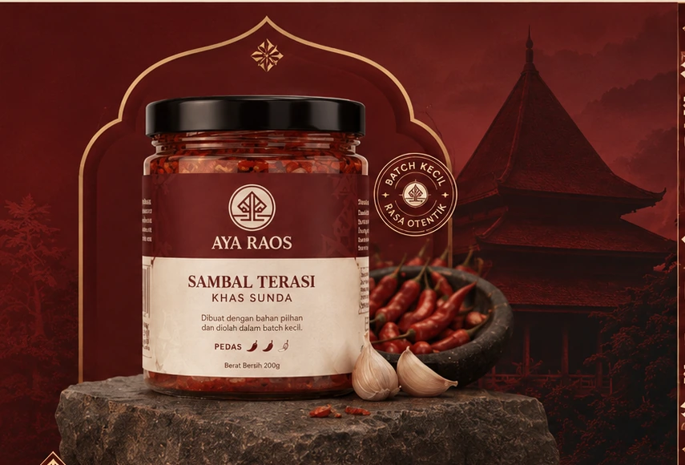

Rumah besar tiga lini AYA. Sebelum memilih produk, kenali dulu makna, fungsi, dan dunia yang menyatukan semuanya. Rumah bagi AYA Spice Haven, AYA Farm, dan AYA Snacks & Drinks.
MAKNA & BUDAYA
Makna RAOS, jiwa dari AYA RAOS.
“Raos” berarti rasa. Bagi AYA RAOS, rasa menjadi benang merah yang menghubungkan produk dengan fungsi yang berbeda dalam satu keluarga.
AYA RAOS=ADA RASA

RAOS DALAM KESEHARIAN
Rasa hidup dari apa yang kita kenali, siapkan, dan nikmati bersama.
Identitas AYA dibawa melalui konteks makanan, cara menikmati, dan informasi produk yang disampaikan dengan jelas.
01
Rasa yang jujur
Kenali karakter produk sebelum memilih.
02
Bahan yang dikenali
Informasi yang sudah terverifikasi ditampilkan apa adanya.
03
Kehangatan di meja
Produk ditempatkan sesuai fungsi dan momen menikmatinya.
SATU KELUARGA · TIGA CARA AYA HADIR
Tiga fungsi utama, tiga lini AYA.
Fungsi menjadi pintu masuk utama; nama lini membantu Anda masuk lebih dalam.
 AYA RAOS
AYA RAOS